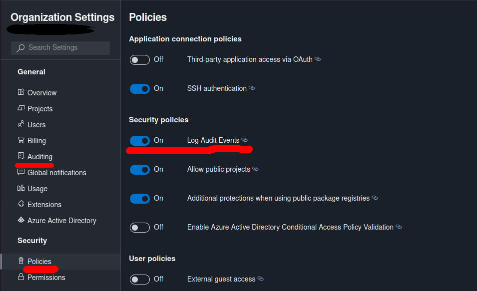
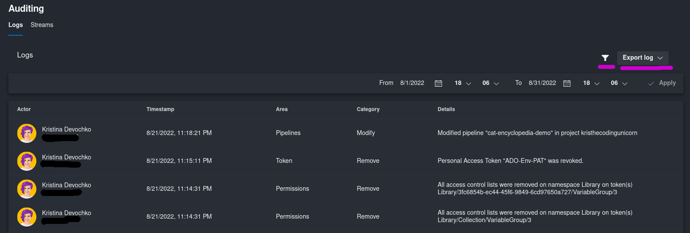
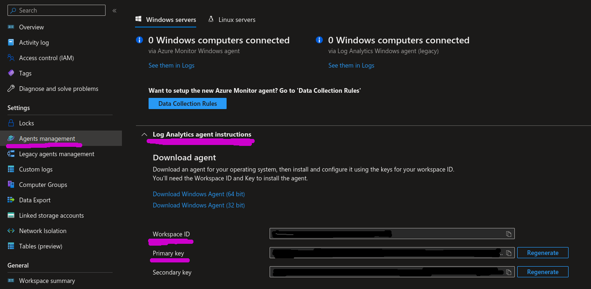
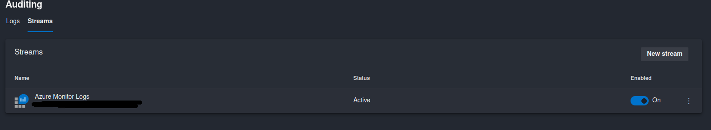
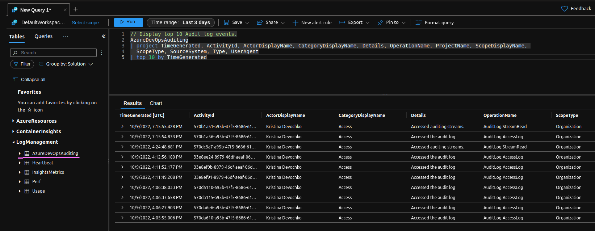

Azure DevOps Auditing - Part 1 - Overview and Streaming to Azure Monitor Logs
In July 2019, as part of Sprint 154, Microsoft introduced support for auditing in Azure DevOps and this is a feature that you really should look into if you haven’t set it up or maybe haven’t heard about it yet. Auditing in Azure DevOps allows you to get an aggregated log of important events related to access control, permission and resource management++ across projects in your Azure DevOps organization.
Functionality evolved quite a bit since it’s initial release and it currently also supports streaming logs to an external service like Azure Monitor logs, which we will take a look at in a bit. At the moment of writing this blog post the feature is still in public preview according to official Microsoft documentation. Hopefully it will soon be released in GA - according to the blog post from November 2021 the plan was to release it in GA early 2022 so let’s hope that it will happen by the end of 2022 at least!😁 You can check out the blog post link in Additional resources section below.
Azure DevOps Auditing - overview and why you would use it
As briefly mentioned above, Azure DevOps Auditing aggregates logs from all the projects that are connected to the Azure DevOps organization where auditing is enabled. Whenever a relevant change is made by a user or a service identity, it gets logged to the Auditing page of the Azure DevOps organization. There are quite many types of activities that are being logged - just to name a few:
- Service connection changes
- Azure Pipelines changes
- Permission changes
- Access control modifications
- Project and Repository changes
- Organizational Policy changes
- etc.
You can find a detailed overview of all the areas, actions and action categories that are being logged by Azure DevOps Auditing functionality here: Auditing events list
By default, Azure DevOps audit logs will be stored for 90 days. If you want to store logs for a longer period than that you will need to set up a backup solution that will continuously export logs and store them at an external location.
So, why would you want to enable Azure DevOps Auditing functionality?
Azure DevOps, just like any other service you may be using, must be monitored for any abnormal activity like invalid login attempts, privilege escalations or permission modifications. If at some point your organization decides to acquire a security-related certification like ISO/IEC 27001, you will need to present proof of audit logs and enabled monitoring for ALL of the services that you’re using internally. In this case, Azure DevOps is one of the most crucial components you may have in your organization since it contains all the source code of the applications you’re owning. You wouldn’t want any malicious actors to get their hands on it, I hope..
This is the reason for why Auditing functionality in Azure DevOps was needed and requested by many organizations. Furthermore, you can aggregate Azure DevOps audit log with other audit logs you may be using from before. Or you can just use the Auditing page that is available directly in Azure DevOps UI itself.
Now, let’s take a look at how we can enable Azure DevOps Auditing and export the audit logs to Azure Monitor logs.
Enable Azure DevOps Auditing
By default, Azure DevOps Auditing is disabled for all the organizations so you will need to enable it in order for the logging to start. You can enable it in two ways: through Azure DevOps UI and Azure DevOps REST API.
If you have installed Azure DevOps Server on-premises, Auditing will unfortunately not work for you. This is the only Azure DevOps deployment that is currently unsupported by Auditing functionality. Your organization must also be connected to Microsoft Entra ID for Auditing to work properly.
Azure DevOps UI
In order to enable Azure DevOps Auditing from the Azure DevOps UI you need to go to the “Organization Settings” page for the respective Azure DevOps Organization - URL should be something like this: https://dev.azure.com/[ORGANIZATION_NAME]/_settings/organizationPolicy
Then, in the “Settings” pane on the left hand side locate “Security” section and choose “Policies”. In “Security policies” section of the Policies page, toggle “Log Audit Events” to ON, just as it’s shown in the screenshot below. Logs will become available from General -> Auditing section in Organization Settings.

Azure DevOps REST API
You can also enable Auditing with Azure DevOps REST API. In order to do that you will need to base64 encode your Azure DevOps Personal Access Token (PAT) and user (which is an empty string in this case) in following format: "":AZURE-DEVOPS-PAT
Once it’s done you can execute a PATCH request to the Azure DevOps Organization Policy API, as in example below:
curl -X PATCH https://dev.azure.com/[ORGANIZATION_NAME]/_apis/organizationpolicy/policies/Policy.LogAuditEvents \
-H 'Content-Type: application/json-patch+json' \
-H 'Accept: application/json;api-version=6.0-preview.1' \
-H 'Authorization: Basic [BASE64_ENCODED_PAT]' \
-d '[{"op":"replace","path":"/Value","value":"true"}]' -i
Overview of enabled Azure DevOps Auditing page
Once Azure DevOps Auditing has been enabled you can access the Auditing page at following URL: https://dev.azure.com/[ORGANIZATION_NAME]/_settings/audit
In this page you will see two tabs: one for the audit logs themselves and one for configuration of audit log streaming to an external service. In the Logs section you get a list of all the logs for different activities that have been performed in the respective Azure DevOps organization. Following information is provided as part of the log entry:
- User name with IP address or service name that executed the action;
- Action timestamp in your configured time zone;
- Area that the action is related to, i.e. Azure DevOps resource like Pipelines, Permissions, Projects, etc.
- Action category showing what kind of action has been executed (Execute/Modify/Create, etc.);
- Additional details about the action. In some cases you can see an additional information icon in the same column - if you click on it you can get even more information about the respective action. For example, all the timestamps for when the respective resource was accessed or all the permissions that have been added/modified as part of this action.
Audit logs can be filtered based on the time period of your choice and logs can be downloaded in CSV or JSON format by clicking on “Export log” drop-down.
In the screenshot below you can see a snippet of logs that were requested for August 2022:

You can also query and download these logs with help of Azure DevOps Audit API
Now, let’s take a look at how we can stream these logs to Azure Monitor logs.
Configure Azure DevOps log streaming to Azure Monitor logs
In some cases it can be really nice to aggregate all the audit logs in one place so that you don’t need to switch between different services in order to access different logs. In addition, Azure DevOps itself doesn’t have any advanced filtering capabilities available in the UI which can make it hard to search and analyze those logs in the Azure DevOps UI itself. That’s when Streams come into picture.
Currently Azure DevOps supports log streaming to three external services:
- Azure Monitor logs
- Splunk
- Azure Event Grid
This time we’ll enable streaming of Azure DevOps audit logs to Azure Monitor logs and see how we can query those logs afterwards with Log Analytics.
Azure DevOps UI
In the Auditing page of Azure DevOps organization settings switch to “Streams” section and click New stream -> Azure Monitor logs. As you can see Azure DevOps audit logs can be streamed to max 2 instances of each of the available external services so you can export logs to max 2 instances of Azure Monitor logs workspaces.
Please be aware that if you don’t have a Log Analytics workspace from before you will need to create a new one - you can check here on how to do that: Azure Monitor Logs - Create a Log Analytics workspace
You will need two pieces of information in order to set up streaming to Azure Monitor logs:
- Workspace ID for Azure Monitor logs instance you’re connecting to;
- Primary key for Azure Monitor logs instance you’re connecting to - it will be the shared key property that Azure DevOps will use to authenticate to the respective Azure Monitor logs instance;
You can retrieve this information either with Azure CLI:
az monitor log-analytics workspace show --resource-group [LOG_ANALYTICS_WORKSPACE_RESOURCE_GROUP] \
--workspace-name [LOG_ANALYTICS_WORKSPACE_NAME] | grep "customerId" \
&& \
az monitor log-analytics workspace get-shared-keys --resource-group [LOG_ANALYTICS_WORKSPACE_RESOURCE_GROUP] \
--workspace-name [LOG_ANALYTICS_WORKSPACE_NAME] | grep "primarySharedKey"
Or by going to the respective Log Analytics workspace in Azure Portal and locating Settings -> Agents management section where you can find both the workspace ID and primary key in “Log Analytics agent instructions” section.

Once a new stream has been created you can see it in the list of the Streams in Azure DevOps Auditing UI. For all the streams in the list you can activate/deactivate them by toggling the Enabled column on and off. You can also edit stream properties or delete the stream by clicking on the three dots on the right hand side of the Enabled column.

Azure DevOps REST API
You can also set up streaming of Azure DevOps audit logs to Azure Monitor logs with help of Azure DevOps Auditing API. So the same operation we did from Azure DevOps UI in the section above can also be done with a POST request, as shown in the example below. Please note that this operation requires a valid Azure DevOps PAT which is base64 encoded in format "":AZURE-DEVOPS-PAT.
Important note here as well is that daysToBackfill is a required parameter which lets the API know if only new entries must be streamed or if existing logs for the provided amount of days need to be streamed as well. For example, if I only want new logs to be streamed to Azure Monitor logs I will use value 0 for this parameter, but if I also want audit logs for the last 30 days to be exported to Azure Monitor logs I will set the value to daysToBackfill=30.
curl -X POST https://auditservice.dev.azure.com/[ORGANIZATION_NAME]/_apis/audit/streams?daysToBackfill=0 \
-H 'Content-Type: application/json' \
-H 'Accept: application/json;api-version=6.0-preview.1' \
-H 'Authorization: Basic [BASE64_ENCODED_PAT]' \
-d '{"consumerInputs": {"WorkspaceId":"[LOG_ANALYTICS_WORKSPACE_ID]","SharedKey":"[LOG_ANALYTICS_WORKSPACE_PRIMARY_KEY]"},"consumerType": "AzureMonitorLogs"}' -i
You can also perform other actions with Audit API like quering, deleting or updating configured streams. More information can be found here: Azure DevOps Audit API - Streams
Accessing and querying Azure DevOps Audit logs with Log Analytics
Now that Azure DevOps audit log streaming to Azure Monitor logs has been enabled you will be able to query and define alerts for those logs with Azure Monitor.
If you go to the Logs section of the Log Analytics workspace that you have enabled streaming for, you will be able to see a new table called “AzureDevOpsAuditing”. You can now query this table in order to get the desired results from the Azure DevOps audit logs. In the example below I’m retrieving top 10 of Azure DevOps audit logs for the last 3 days:
// Display top 10 Audit log events.
AzureDevOpsAuditing
| project TimeGenerated, ActivityId, ActorDisplayName, CategoryDisplayName, Details, OperationName, ProjectName,
ScopeDisplayName, ScopeType, SourceSystem, Type, UserAgent
| top 10 by TimeGenerated

Great job!😺 We have now both enabled Azure DevOps Auditing and configured streaming of Azure DevOps audit logs to Azure Monitor logs where we successfully queried the logs with help of Log Analytics.
Additional resources
You can find more information about Azure DevOps Auditing here:
- Azure DevOps Audit
- Azure DevOps DevBlog announcement for support for Audit Stream: Introducing Azure DevOps Audit Stream
- Azure DevOps Audit API
- C# Code samples on GitHub for Azure DevOps Audit API: azure-devops-dotnet-samples:audit
- Blog post on future roadmap for Azure DevOps Auditing and planned General Availability release: Auditing Coming to General Availability (GA) Early 2022!
Next steps
In Part 2 of this blog post series we’re going to take a look at how we can export Azure DevOps audit logs to Splunk and in Part 3 we’ll take a look at how we can export Azure DevOps audit logs to Azure Event Grid.
That’s it from me this time, thanks for checking in!
If this article was helpful, I'd love to hear about it! You can reach out to me on LinkedIn, Twitter, GitHub or by using the contact form on this page 😺
Stay secure, stay safe.
Till we connect again!😻